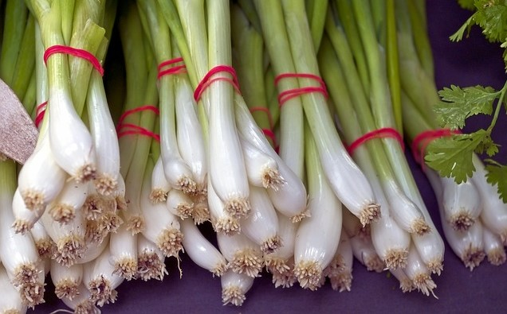

Green Onions, Scallions & Spring Onions
Overview
- includes A. cepa, A. chinense, A. fistulosum & hybrids of the species
- hollow tubular green leaves with either a small bulb or lack thereof
- clusters of hundreds of teardrop-shaped flowers, usually white
- varies greatly in size, up to 500-600cm tall
- native to southeast Asia, especially prominent in China
- perennial, usually planted in the spring and harvested in the summer
Scallions, spring onions, and green onions are all different names for the same group of Allium plants. The names are often used interchangeably, although they technically refer to different stages of bulb development, with scallions being the smallest and spring onions having an actually visible bulb. Due to their slightly sweet and mild taste that is similar to chives, scallions are both used as an herb and cooked whole as a vegetable dish. Scallions are most popular in Asian and Latin American cooking; both the white base and green leaves are used separately for two distinct flavors.
The white part of scallions have a much more potent onion-y flavor, and are either cooked whole or pre-sauteed as a garnish. The green part has a lighter grassy flavor, and can be cut large or finely, depending on the flavor desired. Overall, scallions are very versatile vegetables with many uses, and definitely one of the most popular members of the Allium family.